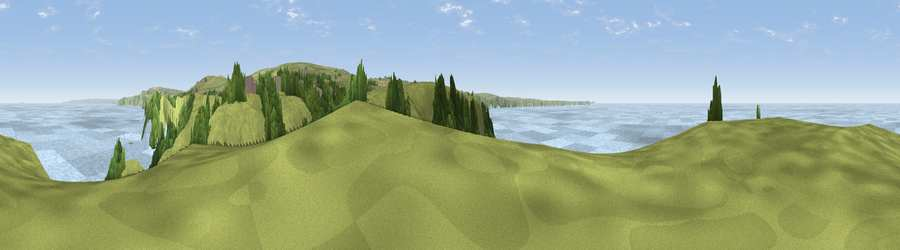

The Island [Pen Diu]
#2292 in England · top 4% of its area beats it · near TintagelThe view, rendered

A 360° render of this exact spot computed from the terrain model, tree cover and land cover — summer colours, afternoon light, calibrated against photographs of famous viewpoints. Real trees, hedges and buildings will differ in detail.
The panorama
Grey silhouette: terrain skyline in each direction (720 bearings, Earth curvature and refraction included). Dashed green: skyline with trees (+15 m) and buildings (+8 m) as obstacles. Blue strip: how far the ground is visible on each bearing.
Where the view opens
Wedge length = distance to the farthest visible ground on that bearing (vegetation-aware). Rings at 10, 25 and 50 km.
What fills the view
45% water · 39% grassland · 14% woodland ·
Angular shares of the visible panorama (visual magnitude), not map area. Landscape diversity 0.46 (0–1 Shannon).
Key numbers
More beautiful places nearby
The staircase of upgrades: each row has a higher view potential than everything closer. Driving times are estimates from straight-line distance, calibrated against real road routing — check an actual route before setting out.
| Place | Direction | Drive | Score |
|---|---|---|---|
| Viewpoint near Boscastle | E · 3 km | ~8 min | 82.0 |
| Viewpoint near Boscastle | E · 4 km | ~9 min | 84.3 |
| Viewpoint near Boscastle | E · 4 km | ~10 min | 85.2 |
| Viewpoint near Boscastle | ENE · 8 km | ~17 min | 85.8 |
| Viewpoint near Lesnewth | ENE · 9 km | ~18 min | 87.7 |
| Viewpoint near Crackington Haven | NE · 10 km | ~19 min | 88.1 |
| Viewpoint near Combe Martin | NE · 80 km | ~104 min | 88.9 |
| Holdstone Hill | NE · 82 km | ~106 min | 90.2 |
50.66843, -4.76156 · source: dobih hill · position refined by local search. Computed location — check access rights before visiting.